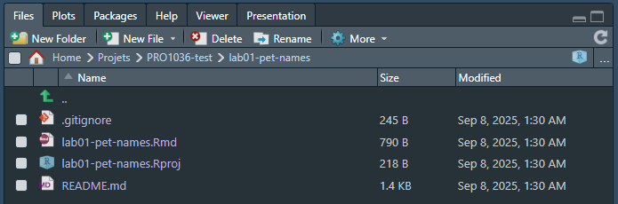
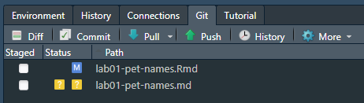
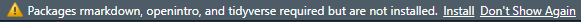
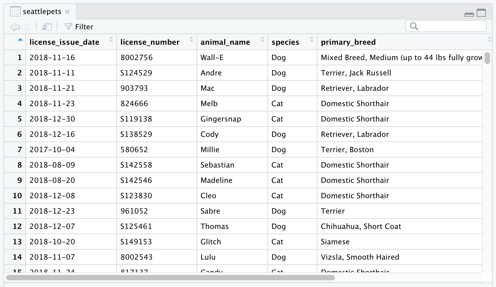
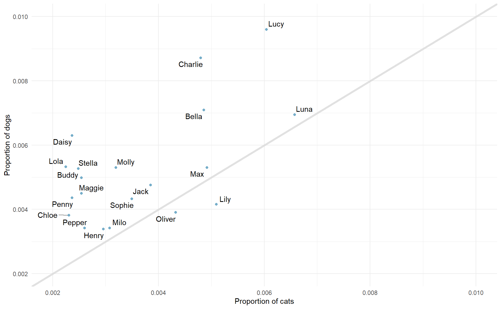

Lab 01 - Pet names
{kind=link}
Le but de cet exercice est de pratiquer les premiers éléments vus concernant R et Git/Github.
Préparation
Terminologie
Nous en avons déjà parler mais répéter ne fait pas de mal:
R: Le language de prorgammation qui sera utilisé dans ce cours.
RStudio: Un environnement de développement intégré (IDE) pour R. En d’autres termes, une interface pour travailler efficacement avec R.
Git: Un logiciel de gestion de versions
GitHub: Une plateforme web pour accueillir des fichiers versionnés et faciliter la collaboration entre utilisateurs.
Repository: Un repository Git (ou repo) contient tous les fichier du projet ainsi que ces versions.
Github
Nous allons commencer par récupérer le fichier Rmd dans lequel vous allez enregistrer vos réponses. Git devrait être correctement installé. Si ce n’est pas le cas, voyez avec le prof.
Sur votre portail de cours, acceptez l’invitation à rejoindre le projet GitHub Classroom pour le Lab01.
Copiez le lien de repo personnel pour le Lab01. Cela devrait ressember à lab01-<votre nom d'utilisateur GitHub>.
Dans RStudio:
- Fichier > Nouveau Projet
- Version Control > Git
- Dans Repository URL : indiquez l’adresse: https://github.com/PRO1036/lab01-[username].git
- Choisissez un nom pour le dossier qui sera créé, par exemple “Lab01”
- Choisissez où vous voulez créer le projet dans votre ordinateur.
Cela va copier les fichiers présents sur GitHub, et les copier dans le dossier spécifié.
Dans RStudio, vous devriez voir le fichier .Rmd listé en bas à droite dans la liste de fichier:

Si vous cliquez maintenant sur le fichier .rmd, il va apparaitre dans la zone en haut à gauche. Vous pourrez l’éditer et le “Render/Knit” pour voir le résultat final.
Veuillez noter que ce que vous écriver dans le fichier Rmd et ce que vous écrivez dans la console ne communiquent pas (il s’agit de deux environnements différents). Si vous voulez utiliser la console (zone en bas à gauche), il faut retaper les commandes.
RStudio
RStudio est organisé en 4 panneaux.

- En bas à gauche se trouve la console. C’est ici que vous pouvez écrire du code qui sera directement interprété. Essayez par exemple
2 + 2. - En bas à droite se trouve le panneau de fichiers, ainsi que d’autres que nous verrons plus tard lors d’analyses.
- Si vous cliquez sur un fichier, il sera ouvert dans l’éditeur, panneau en haut à gauche.
- Dans le panneau en haut à droite, on retrouve l’environnement de travail. Si vous définissez une variable, elle apparaitra ici. Essayez par exemple de taper
x <- 2dans la console. Observez ce qu’il se passe dans l’environnement. - C’est également ici que l’on retrouve le panneau Git où vous pourrez gérer les versions de vos fichiers.
Warm up
Un peu d’échaffement:
YAML
La partie du haut de votre fichier R Markdown, entre les lignes traitillées, est appelée YAML, accronyme pour “YAML Ain’t Markup Language”. C’est une manière human friendly de fournir des informations sur des documents et des code, et qui peut être comprise par de nombreux langages de programmation.
Étape 1: Mise à jour du YAML
Ouvrez le fichier R Markdown (Rmd) dans le projet que vous avez cloné. Changez l’auteur et la date.
Étape 2: Knit
Cliquez sur Knit (le bouton bleu en haut de l’éditeur). Cela va exécuter le code dans le document, et générer un fichier HTML ou .md selon ce que l’on a choisi dans le YAML. Ici, en indiquant output: github_document, nous allons générer un fichier .md, qui peut facilement être lu dans GitHub. Vous devriez voir apparaitre une nouvelle fenêtre avec le résultat. De nouvaux fichiers devraient être apparus dans le panneau de fichiers.
Étape 2: Commit
Ouvrez le panneau Git en haut à droite.
Vous devriez voir votre fichier Rmd marqué comme modifié et son output lab01-pet-names.md marqué comme untracked.

En cliquant sur diff, vous verrez les différence entre le dernier commit et l’état actuel du document. Si cela vous convient, vous pouvez sélectionner les fichiers à commit, ajouter un message dans le Commit message, par exemple “Mise à jour de l’auteur et de la date”. Vérfiez bien que les deux fichiers sont cochés. Cliquez ensuite sur Commit.
Il n’est pas nécessaire de faire un commit après chaque changement. Faites le plutôt après avoir ajouté une fonctionnalité à votre code. Faite le quand cela vous semble pertinent, afin de pouvoir vérifier, comparer ou restorer.
Étape 3: Push
Maintenant que vous avez fait vos modifications, vous allez pusher vos changements sur le web, c’est-à-dire sur votre repo sur Github. Cela permettra aux autres (les profs) de voir vos changements. Appuyez simplement sur Push.
Cela devrait faire apparaitre une fenêtre. Entrez vos informations de connexion pour Github.
Grosse question: Laquelle des étapes précédentes (changement du YAML, committing, et pushing) a besoin de communiquer avec Github?1
Packages
R est un langage open-source, et les développeurs ajoutent des fonctionnalité à travers des packages. Nous allons utiliser les packages suivants:
- tidyverse: Une collection de packages pour faire de l’analyse de données de manière “tidy”
- openintro: un package qui contient les datasets de la ressource OpenIntro.
Nous utilisons la fonction library() pour charger les packages. Dans votre document R Markdown, vous allez voir un bloc de code R nommé load-packages qui contient les lignes nécessaires à charger les packages. Vous pouvez également les charger dans la console en cliquant sur la petite flèche vert Run Current Chunk.
Avant de pouvoir faire ça, il faudra peut-être installer les packages. Cela vous sera proposé en haut de votre éditeur.

Quand vous knittez le document, les lignes dans les blocs de code R sont également exécutées. Les packages seront donc chargés.
Données
La ville de Seattle, WA a un portail de données en source ouverte, qui inclut les animaux de compagnie. Pour chaque animal enregistré, nous avons accès à son nom et son espèce. Les données utilisées dans cet exercice se trouvent dans le package openintro et s’appelle seattlepets. Il n’est donc pas nécessaire de le charger séparemment.
Vous pouvez voir le contenu du jeu de données sous forme taulaire avec la fonction View(). À noter que cette fonction n’est pas utile dans votre document R markdown, mais sert plutôt dans la console pour explorer les données. Une nouvelle fenêtre va s’ouvrir avec les données (ce qui n’est pas compatible avec l’idée d’un document static type html).
View(seattlepets)
Vous pouvez en apprendre plus sur le jeu de données en appelant la fonction d’aide ?seattlepets.
Exercices
Exerice 1
Selon l’aide, combien d’animaux sont présents dans le dataset ?
🧶 ✅ Ecrivez votre réponse dans le document, sous Exercice 1. Knit, et commit avec un message !
Exercice 2
Selon l’aide, combien d’animaux sont présents dans le dataset ?
🧶 ✅ Écrivez votre réponse dans le document, sous Exercice 2. Knit, commit avec un message et pushez !
Exercice 3
Quels sont les trois nom d’animaux les plus commun à Seattle ? Pour répondre à cette question, you devez compter la fréquence d’apparition de chaque nom, et afficher les résultats en ordre décroissant. Utilisez le code suivant.
Tip
Le code suivant peut être lu comme “Prend le dataset seattlepets, puis compte le nombre de ligne avec le même animal_name, et affiche le résultat en ordre décroissant”. le puis dans la phrase précédente correspond à l’opérateur de pipe %>%, qui prend ce qui se trouve avant et l’envoi comme premier argumet de ce qui vient après.
seattlepets %>%
count(animal_name, sort = TRUE)🧶 ✅ Ecrivez votre réponse dans le document, sous Exercice 3. Cette fois, votre réponse va également inclure un morceau de code. Utilisez le block de code mis à votre disposition pour ça. Knit et commit avec un message !
Exercice 4
Nous pouvons également voir les noms les plus communs pour chaque espèce. Pour cela, nous devons d’abord group_by() par l’species, puis faire le count.
seattlepets %>%
group_by(species) %>%
count(animal_name, sort = TRUE)# A tibble: 16,823 × 3
# Groups: species [4]
species animal_name n
<chr> <chr> <int>
1 Cat <NA> 406
2 Dog Lucy 337
3 Dog Charlie 306
4 Dog Bella 249
5 Dog Luna 244
6 Dog Daisy 221
7 Dog Cooper 189
8 Dog Lola 187
9 Dog Max 186
10 Dog Molly 186
# ℹ 16,813 more rows
Note
On observe beaucoup de NA pour les chats… pauvres chatons sans noms…
Cet affichage n’est pas optimal. Nous voulons connaitre le nom le plus commun pour les chats et les chiens mais il n’y a quasiment aucun chat d’affiché ! C’est parce qu’il y a bien plus de chiens que de chats dans le dataset. On peut le vérifier en comptant le nombre d’animaux par espèce.
seattlepets %>%
count(species, sort = TRUE)# A tibble: 4 × 2
species n
<chr> <int>
1 Dog 35181
2 Cat 17294
3 Goat 38
4 Pig 6Cherchons le top 5 de chaque espèce. Pour cela, nous pouvons utiliser la fonction slice_max(). Le premier argument de la fonction est la variable dont nous voulons garder le plus grand nombre, dans notre cas n. Le deuxième argument est le nombre de lignes que nous voulons afficher, dans notre cas n=5. Ici, les deux arguments mentionnent un n. Dans le premier cas, il y a un variable appelé n dans le dataframe résultant du count, alors que dans le deuxième, il s’agit du nom de l’argument, définit dans slice_max().
seattlepets %>%
group_by(species) %>%
count(animal_name, sort = TRUE) %>%
slice_max(n, n = 5)# A tibble: 53 × 3
# Groups: species [4]
species animal_name n
<chr> <chr> <int>
1 Cat <NA> 406
2 Cat Luna 111
3 Cat Lucy 102
4 Cat Lily 86
5 Cat Max 83
6 Dog Lucy 337
7 Dog Charlie 306
8 Dog Bella 249
9 Dog Luna 244
10 Dog Daisy 221
# ℹ 43 more rowsÀ partir de ce résultat, nous pouvons facilement identifier les noms les plus communs pour les chats et les chiens, mais le résutlat est trié selon n (la fréquence) et non par rapport à l’species. En ajoutant une nouvelle ligne au pipe précédent, faite en sorte que les résultats soient triés selon l’espèce d’abord, puis par n. Pour cela, vous pouvez vous servir de la fonction arrange. Vous pourrez indiquer ce par quoi vous voulez tier: arrange(variable 1, variable 2). À vous d’essayer et de voir quel résultat est le bon !
🧶 ✅ Ecrivez votre réponse dans le document, sous Exercice 4, en incluant les blocks de code nécessaires. Knit et commit avec un message !
Exercice 5
La visualisation suivante affiche la proportion de chiens et de chats avec le même nom. Les 20 noms les plus courrants pour chaque espèce sont affichés. La ligne diagonale correspond à la ligne \(x = y\); si un nom apparaît sur cette ligne, cela signifie qu’il a le même succès pour les chiens que pour les chats.
Warning: Using `size` aesthetic for lines was deprecated in ggplot2 3.4.0.
ℹ Please use `linewidth` instead.
- Quels noms sont plus commun pour des chats que pour des chiens ? Ceux au dessus de la ligne ou bien en dessous ?
- Est ce que la relation entre les deux variables (proportion de chats avec un nom donné et proportion de chiens avec un nom donné) est positive ou bien négative ? Que cela signifie-t-il dans le contexte de notre jeu de données ?
🧶 ✅ Ecrivez votre réponse dans le document, sous Exercice 5, en incluant les blocks de code nécessaires. C’est le dernier donc assurez que tout soit propre ! Knit, commit avec un message !
Footnotes
Seulement l’étape du push à besoin de communiquer avec Gihub, c’est pour cela que vos informations sont demandées.↩︎